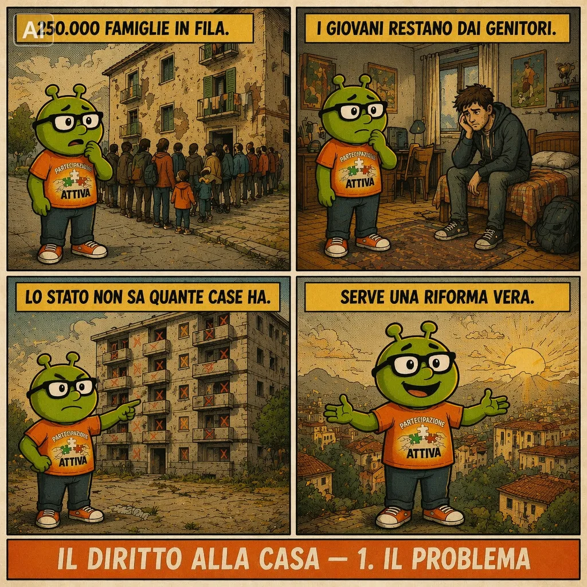
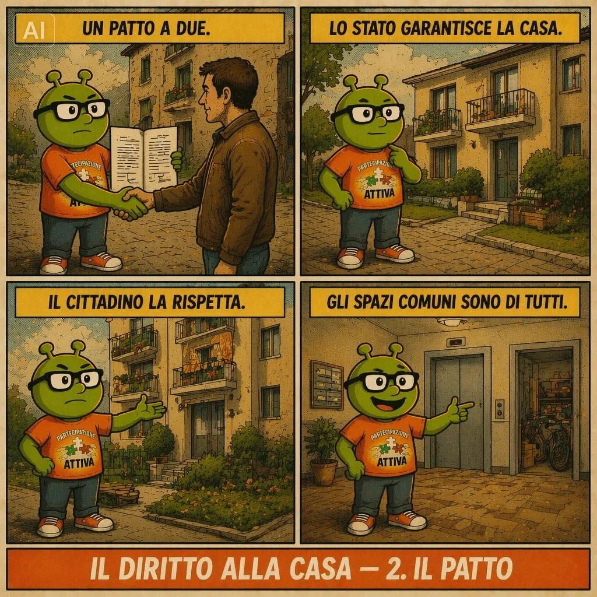
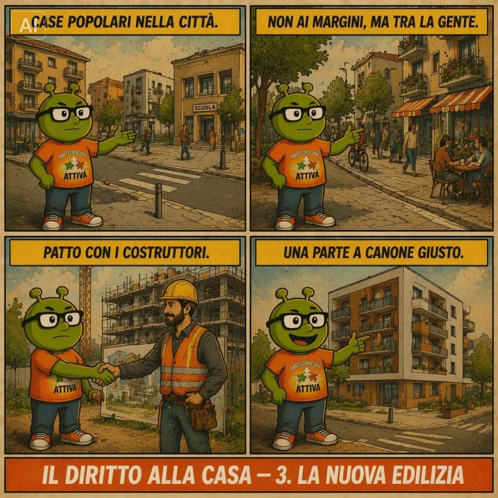
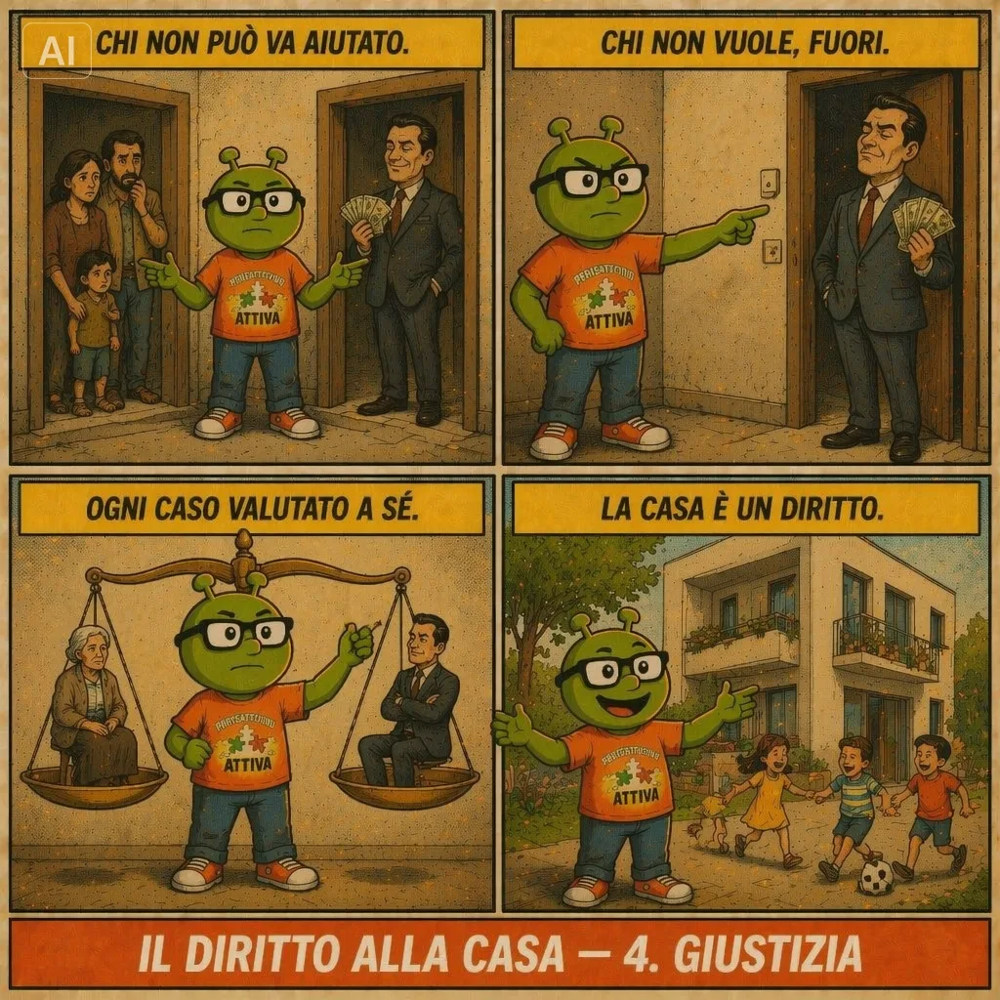

In Italia le liste d’attesa per gli alloggi popolari contano 250.000 famiglie e il 79% dei giovani tra i 20 e i 29 anni vive ancora con i genitori: quasi il doppio della media europea. Il decreto-legge n. 66 del 7 maggio 2026 (Piano Casa) ha avviato interventi urgenti su ERP, housing sociale e rigenerazione urbana. Partecipazione Attiva lo considera un punto di partenza necessario ma insufficiente: un piano edilizio senza riforma della gestione, della trasparenza e della reciprocità tra Stato e cittadino rischia di riprodurre gli stessi problemi su scala maggiore. Questa proposta affronta ciò che il decreto non tocca.
La proposta in quattro quadri
Prima dei dettagli tecnici, il senso della battaglia in un racconto per immagini. PensAttivo accompagna il lettore dal problema alla soluzione — ma ogni quadro va letto per intero: l’illustrazione sintetizza, il testo chiarisce.




La crisi in numeri
Fonti: Ministero delle Infrastrutture, ATER Roma, RIFday, Segugio.it, BusinessOnLine, Corte Costituzionale sent. n. 1/2026.
1. Riforma costituzionale
Il riconoscimento esplicito del diritto all’abitazione tra i diritti sociali fondamentali. L’art. 47 della Costituzione parla di «accesso del risparmio popolare alla proprietà dell’abitazione», non di diritto fondamentale. La proposta è inserire nella Carta il riconoscimento esplicito del diritto all’abitazione dignitosa tra i diritti sociali fondamentali della Repubblica, accanto alla tutela della salute e del lavoro. Non un regalo, ma un obbligo strutturale dello Stato di creare le condizioni perché ogni cittadino abbia un tetto.
2. Censimento obbligatorio del patrimonio ERP
Lo Stato non sa quante case pubbliche ha. Nel 2026 non si conosce il numero esatto degli alloggi pubblici né chi li occupa realmente. È un’anomalia inaccettabile: anagrafe digitale nazionale aggiornata ogni anno (numero, ubicazione, dimensione, occupante, titolo giuridico); verifica biennale dei requisiti degli assegnatari (reddito, composizione del nucleo, residenza effettiva); pubblicazione online dei dati aggregati per regione e comune; supporto agli enti locali con strumenti digitali condivisi e fondi dedicati.
3. Stop all’ereditarietà dell’alloggio pubblico
La casa popolare non è un bene di famiglia. La normativa attuale consente il subentro a parenti o affini entro il terzo grado quasi automaticamente: molte abitazioni vengono tramandate come proprietà privata. Ogni cambio di occupanti richiede una nuova domanda e una nuova verifica dei requisiti, senza automatismi; se il nucleo si riduce, l’ente verifica la proporzionalità rispetto al bisogno attuale; la revoca segue tempi certi (preavviso scritto, due accertamenti annuali consecutivi, provvedimento entro 30 giorni — modello già vigente in Lombardia, r.r. 2025) con diritto al contraddittorio, valutazione sociale preventiva nei casi fragili e ricorso amministrativo.
4. Patto di responsabilità abitativa
Diritti e doveri certi, firmati all’assegnazione. La casa pubblica si degrada anche per l’indifferenza di chi la abita: cantine usate come depositi, terrazze occupate, ascensori vandalizzati. Il patto è un documento firmato all’assegnazione: mantenere l’alloggio in condizioni dignitose (ispezioni programmate e comunicate con anticipo); non occupare spazi comuni con uso privato; partecipare alle assemblee condominiali; sistema di punteggio positivo (chi mantiene bene ottiene priorità al rinnovo e prelazione sull’acquisto); cessazione dell’assegnazione per chi degrada sistematicamente, con tempi certi, previo contraddittorio e accompagnamento sociale nei casi di fragilità accertata.
5. Morosità cronica: fine dell’impunità
Distinguere chi non può da chi non vuole. A Roma ATER perde 51 milioni l’anno: il canone medio è 100€/mese ma il 50% degli inquilini non lo versa. I ricavi reali sono 600€/anno per alloggio contro 1.800€ di costi: gli enti non hanno fondi per la manutenzione, le case si deteriorano, tutti ci perdono. La morosità incolpevole (perdita del lavoro, malattia, eventi improvvisi) trova un fondo di garanzia temporaneo con rimborso rateale concordato; la morosità cronica volontaria attiva procedure di recupero veloci e automatiche, con perdita del diritto all’assegnazione in tempi certi, non decennali; pubblicazione annuale dei tassi di morosità per ente e comune.
6. Gestione condominiale
Chi paga non subisce le conseguenze di chi non paga. Nelle case popolari il proprietario pubblico risponde in solido per le spese insolute: chi paga regolarmente subisce tagli a riscaldamento, acqua o ascensore per colpa altrui. Serve un fondo di solidarietà condominiale gestito dall’ente, che copre le spese in caso di morosità e addebita il costo al moroso; i servizi essenziali non possono essere sospesi ai paganti regolari per inadempienze altrui; contratti di utenza intestati all’ente gestore; tempi massimi di recupero (procedura entro 60 giorni dall’intervento del fondo, recupero concluso entro 18 mesi salvo contenzioso).
7. Patrimonio privato inutilizzato: incentivi, non divieti
Il problema non è solo la carenza fisica di case. Milioni di abitazioni risultano non utilizzate, ma vanno distinti immobili inagibili, seconde case stagionali in zone a bassa domanda e abitazioni disponibili tenute vuote nelle città ad alta pressione. Su queste ultime si interviene con incentivi strutturali: cedolare secca al 10% per il canone concordato pluriennale (oggi al 21% libero); detrazione IRPEF totale sui canoni concordati oltre 4 anni; tassazione progressiva sulle abitazioni sfitte oltre la seconda nelle zone ad alta tensione abitativa. Per la fascia intermedia esclusa sia dall’ERP sia dal mercato libero servono housing sociale e affitto calmierato. Sugli affitti brevi turistici: regolamentazione, non divieto — licenza comunale con numero massimo per zona, tetto annuale di giorni (es. 120), obbligo di residenza anagrafica per il locatore agevolato, facoltà dei Comuni di sospendere nuove autorizzazioni nelle zone a rischio spopolamento.
8. Liste d’attesa: criteri sul bisogno reale
Assegnare in base alla necessità, non alla numerosità. La sentenza n. 1 dell’8 gennaio 2026 della Corte Costituzionale ha stabilito che nelle graduatorie ERP deve prevalere il reale stato di bisogno. La proposta concorda e aggiunge: il punteggio misura il disagio documentato (reddito, condizione abitativa, fragilità sanitaria), non il numero di componenti in assoluto; gli alloggi si assegnano proporzionalmente alla dimensione del nucleo; monitoraggio continuo del reddito, con chi migliora significativamente che contribuisce con un canone più alto o lascia spazio a chi ha più bisogno, secondo modalità definite per legge.
Quanto costa e cosa produce
Una proposta seria deve rispondere alla domanda: chi paga? La risposta è che la maggior parte delle misure non richiede nuova spesa pubblica, ma recupera risorse già disperse nel sistema.
| Misura | Stima | Effetto |
|---|---|---|
| Morosità ERP | 300–400 mln/anno* | Riduzione dal 19% al 10%: libera risorse senza nuovi fondi |
| Alloggi abusivi recuperati | 24.000+ unità | Ritorno al circuito legale: riduce la lista d’attesa |
| Censimento digitale ERP | Costo amm.vo | Finanziabile con fondi PNRR già stanziati per la PA digitale |
| Patto di responsabilità | Zero | Riduce i costi di manutenzione straordinaria |
| Tassazione case sfitte | Gettito aggiuntivo | Reinvestito nel fondo edilizia residenziale pubblica |
| Regolamentazione affitti brevi | Licenze comunali | Risorse ai Comuni per politiche abitative locali |
| Fondo morosità incolpevole | Da definire | Copertura: riordino fondi nazionali + riduzione esenzioni su seconde/terze case sfitte |
No. Ogni diritto è legato a un dovere: patto di responsabilità, verifica dei requisiti, revoca per chi degrada o non paga volontariamente. Lo Stato crea le condizioni, il cittadino rispetta il patto.
No. Sul patrimonio privato inutilizzato la leva sono gli incentivi fiscali (cedolare al 10%, detrazioni), non i divieti. Anche sugli affitti brevi si sceglie la regolamentazione, non la proibizione.